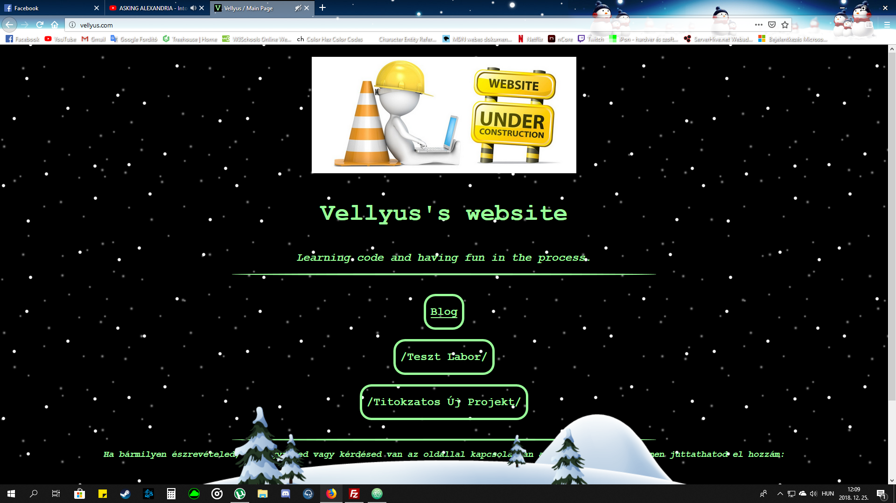
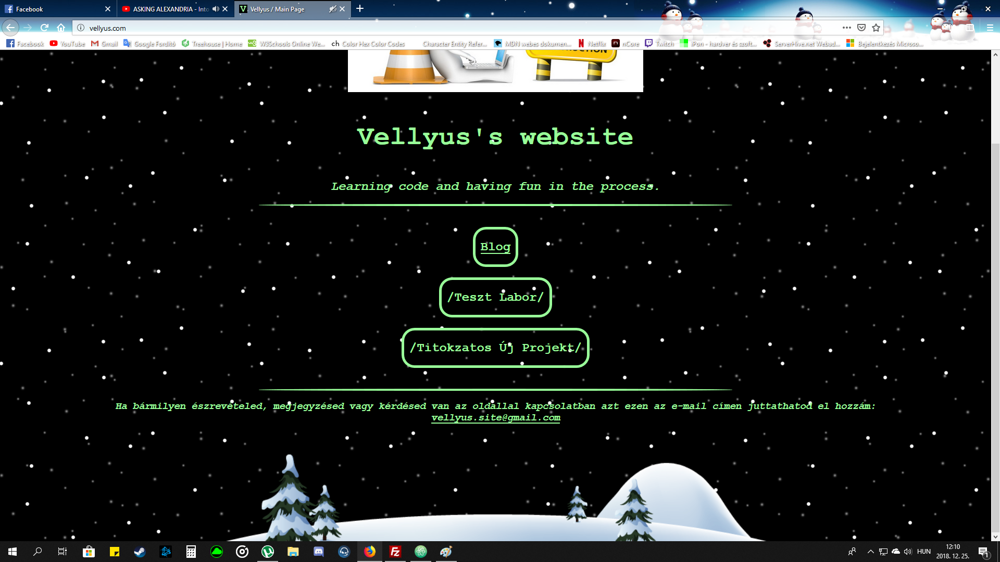
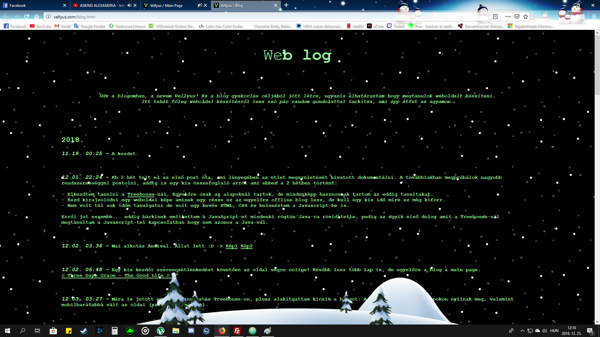
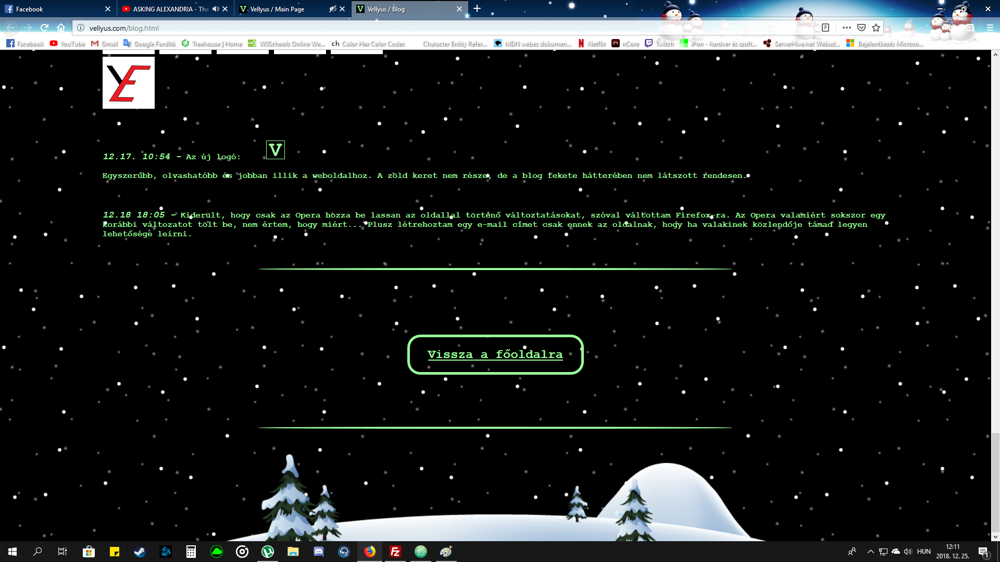
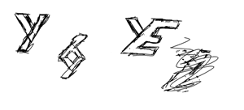

2018.
12.25. 13:06
Ma vettem észre, hogy pár napja sikerült eltűntetnem egy blog postot, szóval ma ezt pótolom. Plusz mostanában nem
nagyon foglalkoztam kódolással,
szóval ideje megint aktivizálódni. Holnap nem leszek, szóval ma kicsit bele kell húznom. :)
Itt van pár screenshot az oldalról. Hogy miért kellenek ezek? Pár dolgot máshogy szeretnék csinálni a jövőben és
nem árt megörökíteni az oldal jelenlegi állapotát.




Amiket a jövőben másképp szeretnék csinálni:
-Szeretnék változtatni a stíluson. Nem vészes a mostani sem, de eredetileg fekete-fehéret szerettem volna. Az a
színkombináció azért lett elvetve, mert tudtam, hogy akarok majd téli témát
és a fehér hópihéktől olvashatatlan lett volna a fehér szöveg. Nos a háttérben való hóesés így is zavart néhány
embert az olvasásban, szóval arra jutottam, hogy a jövőben mellőzöm az ilyesmit
és inkább csak egy külön lapot csinálok ami olyan lesz mint egy képeslap. Így ezek a szezonális dolgok nem
befolyásolják az oldal stílusát, úgy alakítgatom ahogy csak szeretném. Nem biztos,
hogy fekete-fehér lesz, valamiféle változás biztosan várható.
-Egy másik változtatás, hogy most kissé túlméretezettre sikerült minden, és gépen annyira nem is, de telefonon
hülyén néz ki, szóval kicsit szerintem minden kisebb lesz.
Az elveszett blog post:
Hogy tehetsz szert saját weboldalra?
Egészen pontosan azt fogom elmondani, hogy én hogy csináltam az enyémet. Nem fogom lépésről lépésre megmutatni,
hogy mit kell tenned, ehhez sok helyen találhatsz útmutatókat.
A Google a barátod...
Először is szükséged van egy domain névre, ami nálam ugye a "vellyus.com". Én a GoDaddy-nél vettem, talán ott a
legolcsóbb.
Aztán szükség van egy szerverre ami hostolja a weboldalad. Erre a célra én a HostGator-t választottam, fontos hogy
a host olcsó és megbízható legyen. Aztán hogy ne kelljen folyton a HostGator
control paneljébe belépegetni le letöltöttem egy FileZilla nevű FTP klienst. Ez a progi lényegében összeköti a
géped a webszerverrel, így egyetlen egérmozdulattal tudsz a gépről fájlokat tölteni
a szerverre, vagy fordítva. A FileZilla ingyenes, Mac-re ha jól tudom a Cyberduck egy hasonló ingyenes progi. A
kódoláshoz minden operációs rendszerhez vannak ingyenesen elérhető programok,
én Windows-t használok és az Atom nevű code editorral teljes mértékben meg vagyok elégedve. Kezdőként is könnyen
kezelhető, és ha minden projeket saját mappába különítesz el akkor átlátható.
Mellesleg ez az első blog post amit a telefonomról írtam. Hogy lehetséges ez? Nos telefonra is le lehet tölteni
kódszerkesztő és FTP kliens alkalmazásokat.
Én Androidot használok és a QuickEdit valamint az AndFTP nevű alkalmazásokra esett a választásom. Csak arra
figyelj, hogy ha valamit változtatsz a weboldaladon
és azt feltöltöd a szerverre utána ahogy géphez kerülsz előbb töltsd le a szerverről a friss fájlokat és aztán
kezdd el módosítgatni a gépeden lévőket.
Ha elfelejted, akkor te is így jársz ahogy most én. :D
12.18. 18:05
Kiderült, hogy csak az Opera hozza be lassan az oldallal történő változtatásokat, szóval váltottam Firefox-ra. Az Opera valamiért sokszor egy korábbi változatot tölt be, nem értem, hogy miért... Plusz létrehoztam egy e-mail címet csak ennek az oldalnak, hogy ha valakinek közlendője támad legyen lehetősége leírni.
12.17. 10:54
Az új logó:
Egyszerűbb, olvashatóbb és jobban illik a weboldalhoz. A zöld keret nem része, de a blog fekete hátterében nem
látszott rendesen.
12.17. 10:19
Valamikor a héten elkezdtem egy logo tervezgetését, ha lehet ezt annak nevezni. :D Már régóta le akarom cserélni
az eredeti HostGater-es ikont a weblapon.
Az A-terv az volt, hogy olyan logót csinálok ami tartalmazza a nevem betűit és csinálok belőle egy GIF-et. Végül
csak a Velly jött ki, és kiderült hogy a weblap ikonja nem lehet GIF.
Szóval igazából kuka az egész, és már van egy B-tervem, de jól elvoltam vele és szeretném megörökíteni ezt a kis
kudarcot is. :)
Íme a firkálmányaim:


12.16. 18:36
Ma végre tudtam kicsit kreatívkodni. Elkészült a main page (bár még biztosan lesznek rajta változtatások) és készülőben van egy másik page is. Egy barátom megkért, hogy csináljak neki is egy oldalt. Korábban én is gondoltam ilyesmire, szóval örülök hogy ő is szeretne egy oldalt. Így muszáj lesz haladnom és lehetőséget ad a gyakorlásra, plusz ha elakadok új dolgok tanulására.
12.12. 22:10
Honnan ered a nevem?
Mostanában nem nagyon blogoltam és a tanfolyammal se haladtam. Elég fárasztó napjaim voltak, semmire se volt időm
/ energiám. Mi a fenéről blogoljak, ha nem haladtam semmivel? Nos, itt egy kis érdekesség mára: honnan is ered a
nevem?
A Vellyus nevet először egy WoW karakterem kapta meg, haverok amúgy Vellynek becéznek. Szóval úgy jött, hogy
minden jó név foglalt volt, hát egy random név generátorból pár óra szenvedés után sikerült ezt kiválasztani.
Nagy előnye, hogy semmit sem jelent, így sehol sem foglalt. Elég sokat játszottam ezzel a karakteremmel,
megszoktam hogy így hívnak és azóta kb mindenhol ezt a nevet használom. Magyarok szokták érdekesen kiejteni,
szóval a biztonság kedvéért elmondanám, hogy "Velliusz"-nak kell ejteni. :)
12.09. 22:13
Hát ez a nap se úgy alakult ahogy elterveztem. A HTML-ből nem lett semmi, holnapra marad, de némi progress azért
ma is történt:
- A kellemesebb olvasói élmény érdekében a betűszín egy nüansznyit sötétebb lett ;)
- Kipróbáltam egy Vampire Black háttérszínt is, de könnyebb a szöveget olvasni ha sima fekete marad a háttér.
- Beállítottam egy margót %-ban megadva, hogy telefonon se legyen belőle probléma és nagyobb képernyőn se kelljen
túl sok fejmozgás az olvasáshoz.
- Ezen kívül kiderült hogy korábban miért nem tudtam módosítani az oldalt CSS-ben, de HTML-ben igen. Valamiért ha
CSS fájlt írok felül a szerveren azt lassabban dolgozza fel, kell kb fél óra mire végbemegy a változtatás.
Hogy ez miért van így azt még mindig nem tudom...
12.09. 07:28
Vasárnap reggel van, de nekem ez valójában szombat este. A szombatom a pihenésről szólt, semmi kedvem nem volt haladni. Remélhetőleg a mai napom kissé progresszívebb lesz, de lehet hogy most már megpróbálok estig fent maradni ami lehet hogy ahhoz vezet majd hogy zombi leszek. Hétköznap meló mellett megint nem lesz sok kedvem tanulngatni, szóval a HTML tanfolyamot végig kéne pörgetnem mostanában, jövő hétvégén meg mondjuk a CSS-t és utána végre belevághatnék a JavaScriptbe ami már elvileg sokkal nehezebb lesz (korábban már belenéztem, de csak az alapokról volt szó).
12.07. 16:48
Miért ilyen a blog?
Ahogy látod, ennek a blognak a formátuma egy kissé eltér a normális, elterjedt blogolási formától. A nomrál
blogolási forma szerint minden bejegyzésnek kellene egy téma, egy cím és a kontextusból kiragadva
is lenne értelme egy-egy postnak. Sok esetben minden egyes post új lapon nyitható meg és a szöveg mellett képek,
videók is vannak. Ezzel szemben én inkább csak naplószerűen írok rövidebb postokat.
Ez a formátum később még változhat, hiszen ahogy fejlődök folyamatosan változik az oldal is.
Egyelőre azonban célravezetőbbnek tartom a rövidebb postokat a cél ugyanis elsősorban a fejlődésem dokumentálása.
Ezen kívül úgy érzem, hogy ha heti pár postot szeretnék kirakni, amik mondjuk kicsit terjedelmesebbek és
összefoglalják pár nap eseményeit egyszerűen nem tudnám rendesen összeszedni a gondolataim egy
ilyen megírásához. Ha viszont mindent leírok amig friss az élmény nem veszik el semmi.
12.05. 09:41
Valamiért ha HTML-ben állítgatom a lábjegyzet stílusát, akkor minden működik, de ha átrakom ugyanazt a CSS-be problémákba ütközök. Ha offline nyitom meg teljesen jó, de amint feltöltöm a szerverre működésképtelenné válik. Ez számomra teljesen érthetetlen... egyelőre hagyom HTML-ben ezeket a részeket. -.-
12.05. 08:25
Kísérleteztem kicsit a lábjegyzettel és nagyon meg vagyok elégedve az eredménnyel. Sikerült megfelelő képet
találni, megoldani hogy a kép hátterében is essen a hó,
végig alul tartani ahogy legörgetünk az oldalon, középre rakni és méretezni. Telefonon kicsit furán néz ki.
Állítva túl kicsi a kép, a telót eldöntve meg túl nagy, de annyira nem zavar.
Kicsit talán zavaró lehet úgy olvasni a szöveget, hogy esik a hó a háttérben meg a lábjegyzet is itt lábatlankodik
alul. Úgyhogy ha elkészül a main page (még neki se álltam),
akkor valószínűleg minden ilyesmit oda rakok, itt pedig marad a szimpla fekete háttér.
12.04. 11:28
Találtam a neten Matrixos hátteret. Még mindig nem tudok ilyet csinálni, de a készítő elég részletesen leírta,
hogy melyik kódsor mit is csinál szóval talán
sikerül berakni háttérnek. Nade nem erre a lapra, ha a blog hátterében futna olvashatatlanná válna a szöveg. Úgy
képzelem, hogy lesz egy main page egy menüvel és az alatt fog futni a Matrixos háttér.
Itt a link a háttérhez
Csak az nem tetszik benne, hogy a filmben nem épp ilyen karakterekből állt ez a "kód", szóval valahonnan elő kell
keresnem azokat a karaktereket és átírni a scriptben lévőket. Most nincs időm ilyesmikkel
szórakozni, de később mindenképp nekiállok, aztán meglátjuk mit sikerül mindebből megvalósítani.
12.04. 07:08
Megvan, hogy miért akadozott telefonon a háttér: nem a ratyi Samsungos böngészőt kellett volna használni, hanem
mondjuk Chrome-ot. :)
( 12.04. 11:15 - Megjegyzés: Chrome-ban a zenét is automatikusan elindítja. )
12.03. 22:16
Oké, a némításra egy megoldás: jobb klikk a lapra, aztán "Lap némítása" / "Lap hangosítása". Operán legalábbis így működik, biztosan van rá megoldás a többi böngészőben is. Le kéne töltenem a Chrome-ot meg a Mozillát is, hogy megnézzem azokon milyen az oldal, de ezt is majd később.
12.03. 22:02
A háttér jobb telón nem akadozik, a zene viszont nem a legjobb. Az iPhone-on állítólag semmi, Androidon feldobja, hogy letöltheted vagy társíthatod valami lejátszóhoz. Ha lejátszást választasz pl. VLC-vel akkor működik. WindowsPhone-on még nem volt alkalmam kipróbálni. Ha vége a számnak nem indul újra, nem tudom hogy akarom-e, hogy folyton menjen... Engem már kezd idegesíteni, hiszen én rendszeresen nézegetem az oldalt. Jó lenne valamikor egy némító gombot rakni valahova hogy ne kelljen az op.rendszer hangkezelőjében matatni valahányszor az oldalt nézem. Most nincs kedvem ehhez, de majd később talán megcsinálom. Kéne még egy kis Treehouse, aztán asszem mára ennyi elég is lesz.
12.03. 21:49
A havas háttér egyelőre marad ilyen, nekem bejön. A háttérzenét viszonylag hamar sikerült megldani. Meg is van a karácsonyi téma :) . Oké, annyira nem karácsonyos, inkább csak téli, de nem akarok égőket, díszeket, ajándékokat meg fákat, az nekem kicsit giccses.
12.03. 20:42
Gondoltam nekiállok a hóesős háttér elkészítésének, mert közeleg a karácsony és nem tudtam mennyi időmbe fog
telni mire találok egyet amit működésre tudok bírni
és tetszik is. Lehet ezt elég összetetten is csinálni, de szerencsémre el lehet készíteni csak CSS-ben is, ami
lényegesen leegyszerűsíti a dolgokat. A CSS-ben való animálást még mindig nem sajátítottam el,
a mostani hátteret csak copyztam, de ránézésre nem tűnik túl bonyolultnak és legközelebb talán már képes leszek
egyedi verzióval előállni.
Néhány probléma a mostani háttérrel: Elég hosszan tart az animáció de ha az ember belemerül és nézi egy ideig
idegesítő tud lenni ahogy újraindul. További probléma, hogy nekem telefonon eléggé töredezve
fut, még nem tudom mi okozza... Talán csak a kijelző mérete, vagy a készülékben lenne kevés a RAM?
Még próbálkozok egy kicsit a havas háttérrel, a kövi lépés pedig az lesz hogy valahogy berakom ezt a számot
háttérzenének: ♫ Linkin Park - My December ♫
12.03. 04:57
Látszólag nem sokminden történt ma az oldalon, de a háttér sokat változott. Az átláthatóság kedvéért a stíluselemeket külön stylesheetre helyeztem (eddig a html-be voltak írva). Könnyebb lett az oldal frissítése egy "FileZilla" nevű proginak köszönhetően (nem kell mindig belépni a HostGator oldalára, csak áthúzom a fájlokat és kész is). A képek linkelése is könnyebbé vált: rájöttem hogy Facebookon tudok magammal chatelni, így nem kell ismerősöket zaklatni az oda feltöltött képekkel. Biztos létre lehetett volna hozni valami privát albumot is, de sose ment túl jól a FB kezelése :D .
12.03. 03:27
Mára is jutott egy kis tanulgatás Treehouse-on, plusz alakítgattam kicsit a blogot: A linkek most már új lapokon nyílnak meg, valamint mobilbarátabbá vált az oldal (szélesség, margók).
12.02. 05:48
Egy kis kezdői szerencsétlenkedést követően az oldal végre online! Később lesz több lap is, de egyelőre a blog a
main page.
♫ Three Days Grace - The Good Life ♫ ^^
12.02. 03:36
Mai alkotás Andival. Állat lett :D -> Kép1 Kép2
12.01. 22:24
Kb 2 hét telt el az első post óta, ami lényegében az ötlet megszületésének az időpontját hivatott rögzíteni.
A továbbiakban megpróbálok nagyobb rendszerességgel postolni, addig is egy kis összefoglaló arról ami ebben a 2
hétben történt:
- Elkezdtem tanulni a Treehouse-nál. Egyelőre csak az
alapoknál tartok, de mindenképp hasznosnak tartom az eddig tanultakat.
- Kezd kirajzolódni egy weboldal képe aminek egy része ez az egyelőre offline blog lesz, de kell egy kis idő mire
ez még kiforr.
- Nem volt túl sok időm tanulgatni de volt egy kevés HTML, CSS és belenéztem a Javascript-be is.
Erről jut eszembe... eddig bárkinek említettem a JavaScript-et mindenki rögtön Java-ra rövidítette,
pedig az egyik első dolog amit a Treehouse-nál
megtanultam a Javascript-tel kapcsolatban hogy nem azonos a Java-val.
11.19. 00:25
A kezdet.